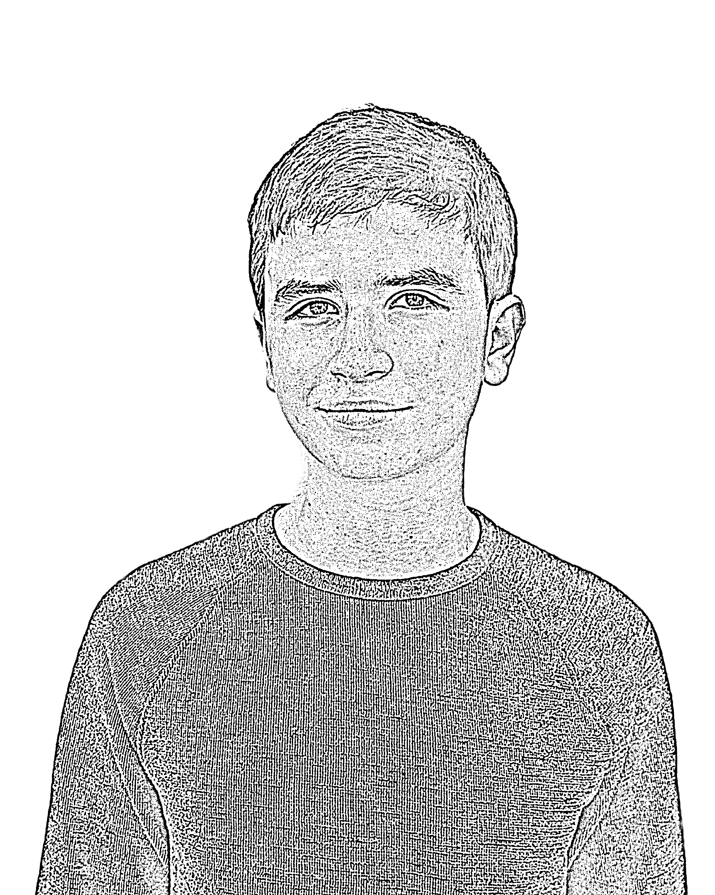
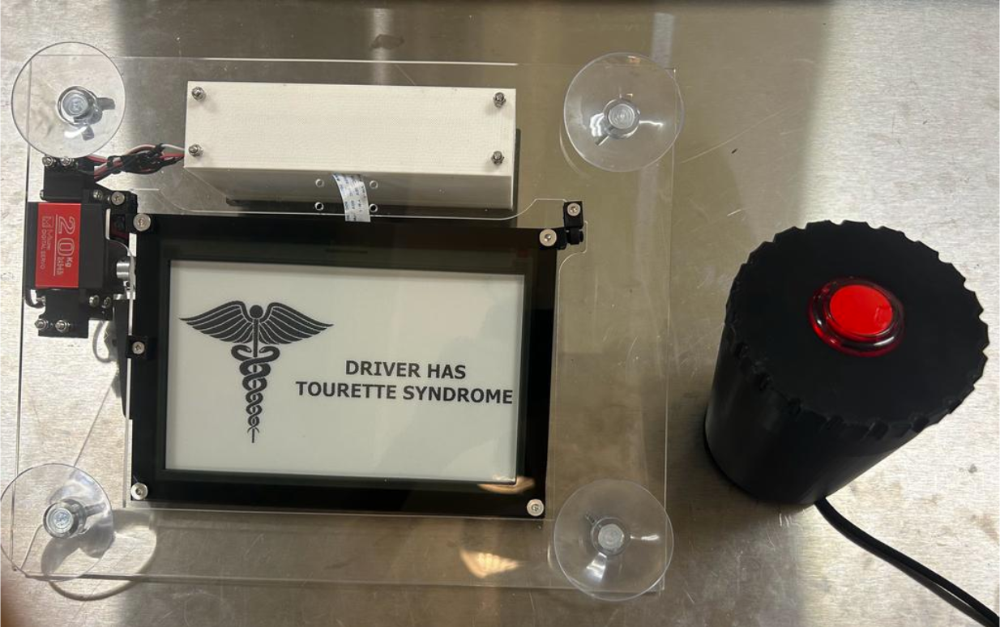
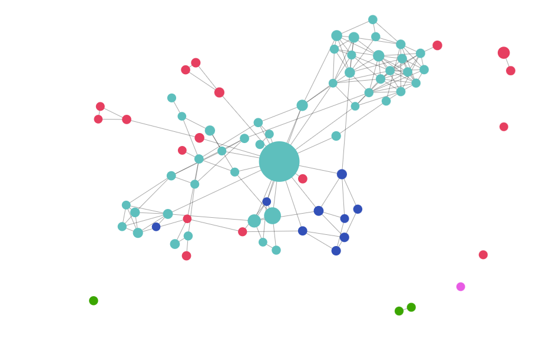
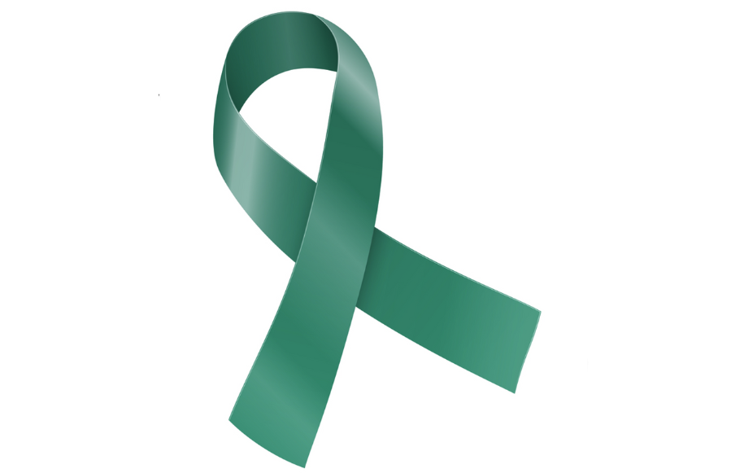

Adam

Stone

Vincent Van Gogh once said, “I dream of painting and then I paint my dreams,” capturing a sentiment that guides me as I imagine and create through technology and the performing arts. Using my analytical skills and artistic strengths, I strive to educate, connect, and make an impact.
Please enjoy exploring some highlights of my work:
Please enjoy exploring some highlights of my work:
STEM
Arts & Advocacy

Disability Forewarning System
Fab Academy Final Project
Facilitates interactions between drivers with Tourette Syndrome and law enforcement at a traffic stop
Open

Expert Network Map
Research, AI & Data Visualization
Network analysis and data visualization to locate hidden expertise in the Fab Academy community
Open

Advocacy
Tourette Association of America (TAA)
Youth Ambassador
Representing the TAA on Capitol Hill, giving school presentations, and leading national training
Open